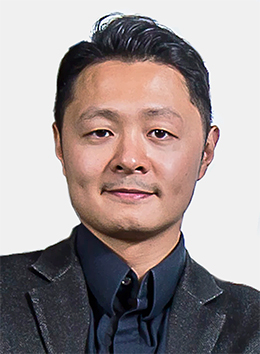
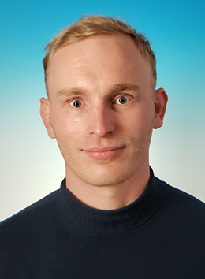

Director
Sai-Kit Yeung
ISD · CSE · OCES
Marine AI, computer vision & intelligent systems
Faculty profile ↗PEOPLE
Researchers across AI, robotics and ocean science, connected by curiosity and a shared purpose.

Director
ISD · CSE · OCES
Marine AI, computer vision & intelligent systems
Faculty profile ↗
Associate Director
ISD · MAE
Soft robotics, reconfigurable systems & marine robotics
Faculty profile ↗